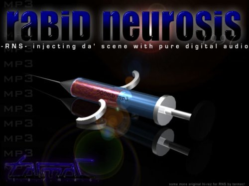

| Rabid Neurosis | mp3 | |||
|  | ||||
| www | #rns | nfo | ||
DJ Q-Bert - Camel Bobsled Race (DJ Shadow Megamix) Get It, Got It, Groove (Dance Compilation) Marilyn Manson - Remix & Repent Babyface - Unplugged NYC 1997 (MTV Unplugged) n-trance - da ya think im sexy (single) SoSoDef Bass Allstars - Vol 2 Destiny's Child - No, No, No [CD-Single] Deep Blue Something - Home Gina Thompson - Nobody Does It Better NonChalant(1996 - maxi single) - 5 o Clock DJ Jay - Av8me Aaliyah - One In A Million Dru Hill - Dru Hill Menace II Society SDTRK Motown - 25 #1 Hits From 25 Years Power 106 FM 10th Anniversary SWV - It's About Time The Isley Brothers - Mission To Please Wyclef Jean - The Carnival Led Zeppelin - BBC Sessions (Double CD) Ministry - Filth Pig Pink Floyd - Dark Side of the Moon Seven Mary Three - Rock Crown Suicidal Tendencies - Primal Cuts MegaDeth - Countdown To Extinction Outkast - Southernplayalisticadillacmuzik Don't Be A Menace - Soundtrack Adam Sandler - They're All Gonna Laugh At You cHemo Presents... Bob Marley LIVE Patti Smith - Peace & Noise Megadeth - Youthanasia Eazy-E - 5150-Home for the sick Maxi CD Lil Ric - Wicked Streets Zhane - Saturday Night (full CD) EPMD - Business As Usual Life of Agony - Soul Searching Sun Korn - Korn Korn - Life is Peachy The Beatles - 1967-1970 disc one Somethin' For The People - This Time It's Personal In to 98 - Rap up (Custom RNS Compilation) Primus - Pork Soda Megadeth - Hidden Treasures Eazy E - It's On Dr. Dre 187UmKilla THE D.O.C - No one can do it better Dr Octagon - Blue Flowers (Automator's Remix) Classic G-Funk Volume 1 Metallica - Binge, purge and live shit Pantera - Far Beyond Driven Cloud 9 Productions - Fattest Jams Vol. 1 And Many Custom RNS Mixes (These were released in the past 3 weeks) |
We were struggling there for a while, trying to decide which way to go, private or stay public, cause of this new net act, but private didn't work out, wasn't fun, and that's what our scene is about, so #rns is once again -i |
World Domination (WD) Is Gone Forever Thanks A Million to NC, It Was Great When It Was Around. We Got 2 new siteops, we won't print their nicks, The Outer Limits and The XTC HeadQuarters |
APC, quit ripping us off, it's really lame |
We heard there was a rumor about RNS dying, hmm, that's kinda funny considering we are whooping APC in releases, we just don't get them out to the public because of the lack of public sites and offer bots. |